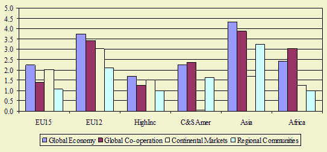
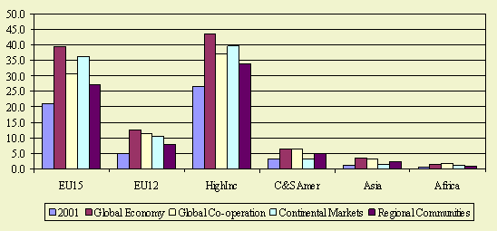

Highlights
Income growth rate in EU10 countries is higher than in EU15 countries in all
scenarios. Despite higher income growth rates in developing and transition countries,
the high income differences with developed countries (EU and High Inc.) will
not disappear in the near future

Figure 1 - Change in GDP per capita, annual growth
rates in %
Future developments
The process of transition continues in the accession countries (EU10). Income
growth is high (2-3 times that of the EU15). The level of income is less than
50% of that of the EU15 and there is ongoing structural change in their economies
and especially in agriculture. Economic growth will accelerate in the EU-10
after accession. Structural change will be supported by structural funds and
rural development. The EU15 economies are more saturated. The economies grow
slowly and there are relatively stable structures in the whole economy.
The Global Economy (A1) scenario (se scenarios >>) assumes the WTO
negotiations are successful, global trade fully liberalized and a further Eastwards
EU enlargement (including Turkey). Technological change is high. Poor countries
will catchup and experience high economic growth. This scenario shows the highest
income growth for almost all regions.
Global Cooperation (B1) scenario assumes that international cooperation
is successful and trade will be liberalized, but under conditions for people
and planet (e.g. climate change). This results in lower productivity growth
in economic terms and a lower economic development than in A1, especially for
the EU where these concerns are important. We observe high growth rate in the
EU accession countries (EU10).
In the Continental Market (A2) scenario the focus is on markets, though national
or continental interests prevails. The United States and EU create a Trans-Atlantic
internal market. This yields welfare gains in EU and the United States in contrast
with poverty in developing countries.
In the Regional Communities (B2) scenario both economic and non-economic values
are important while regional or national interests prevail. Trade and agricultural
policies remain almost unchanged, except for export subsidies, EU integration
is only partial and technological change is limited. The resulting economic
growth is lower than in other scenarios. Social values lead to catching up of
developing countries because they can adopt existing technologies from developed
countries.

Figure 2 - GDP per capita, in 1000 USD
Despite higher income growth rates in developing and transition countries, the
high income differences with developed countries (EU and High Inc.) will not
disappear in the near future
Policy effects
The impacts of the policy options (CAP policies and biofuel policies) on GDP
is very limited.
Most important drivers
Level of technological change